×

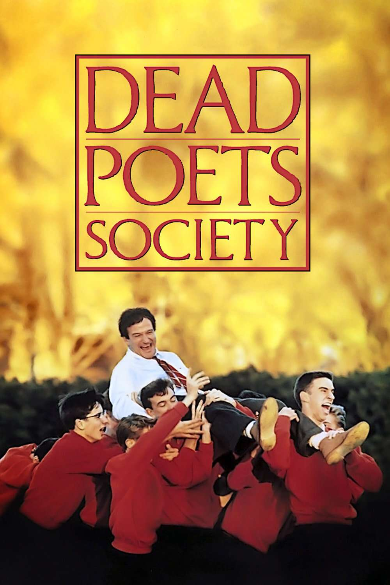
Dead Poets Society
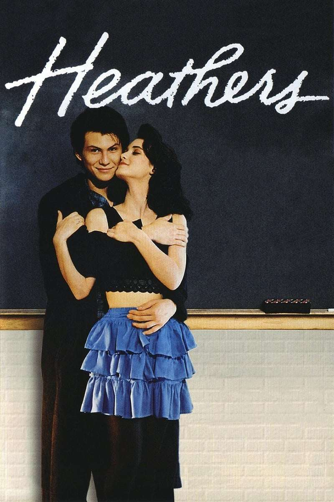
Heathers
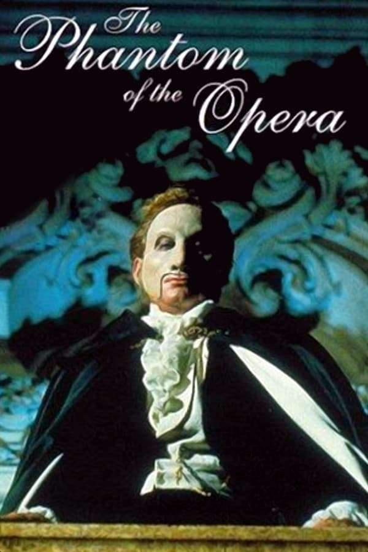
The Phantom of the Opera
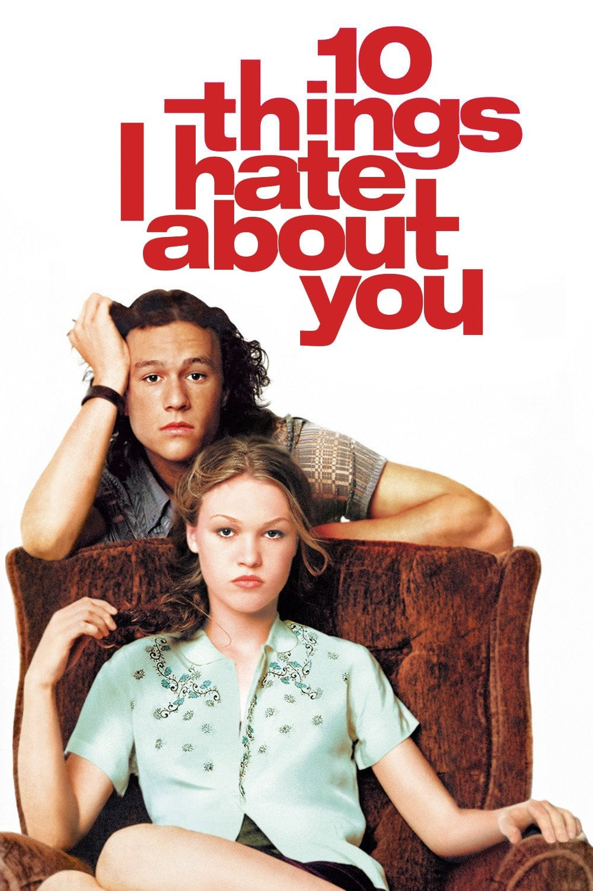
10 Things I Hate About You
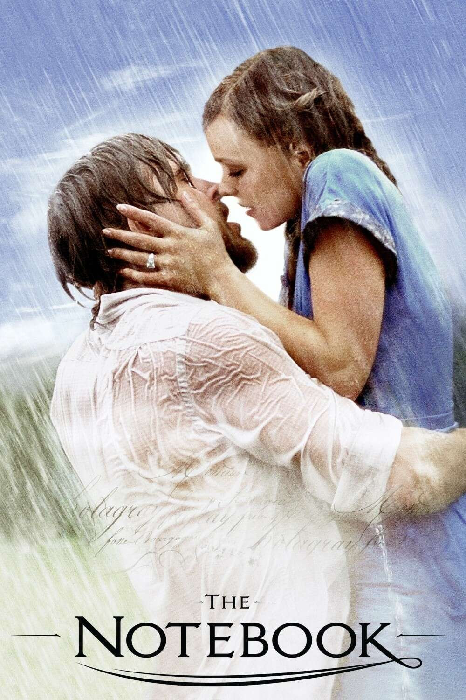
The notebook
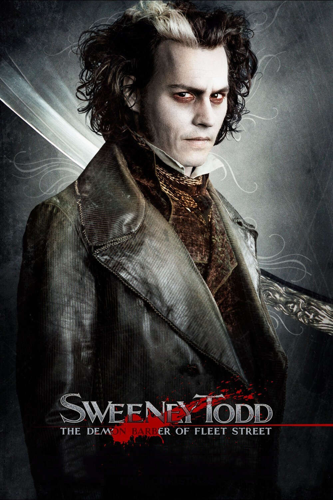
Sweeney Todd: The Demon Barber of Fleet Street
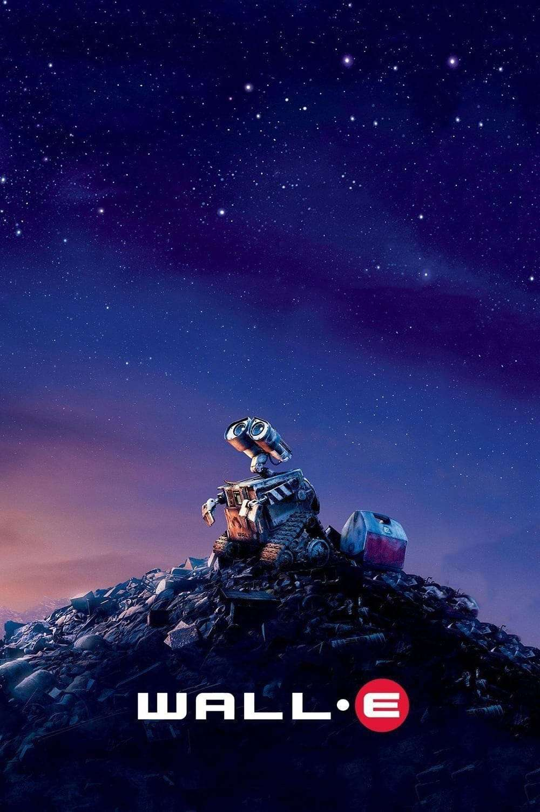
Wall·E
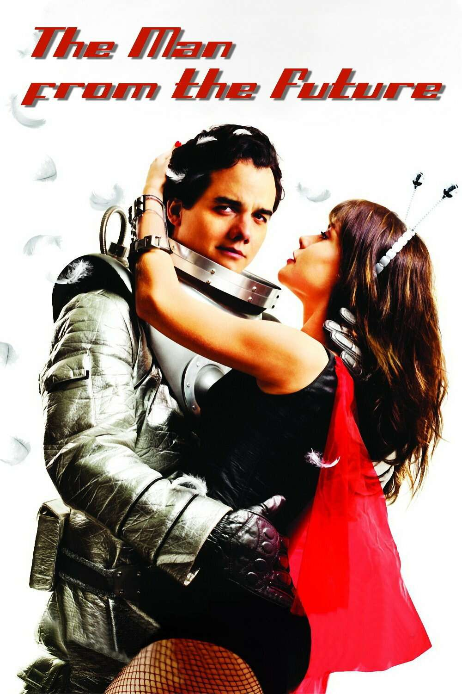
O homem do futuro
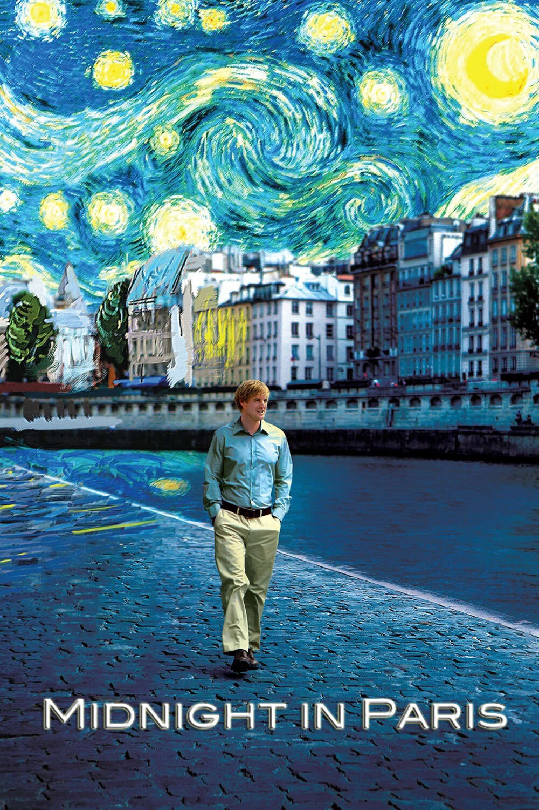
Midnight in Paris
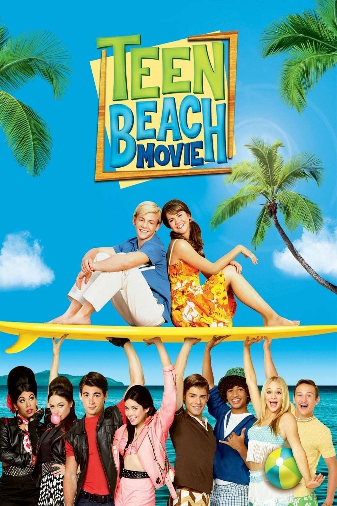
Teen Beach Movie
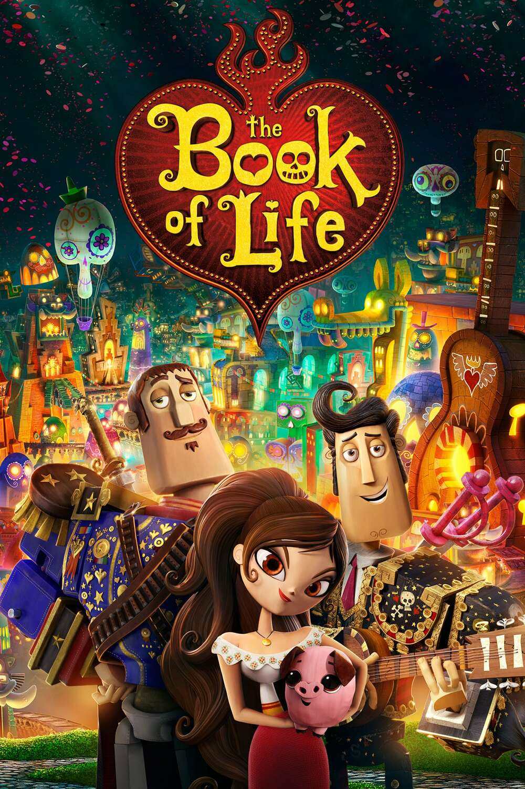
The book of life
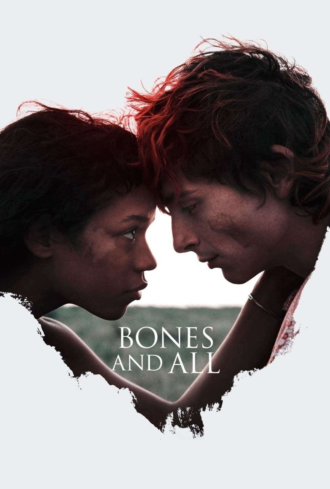
Bones and all
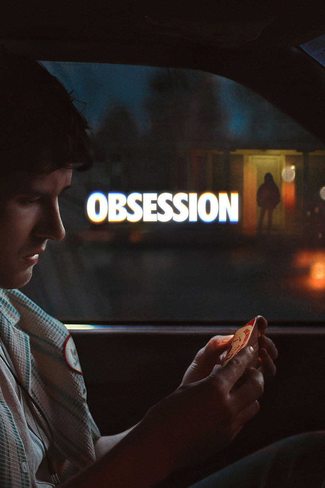
Obsession
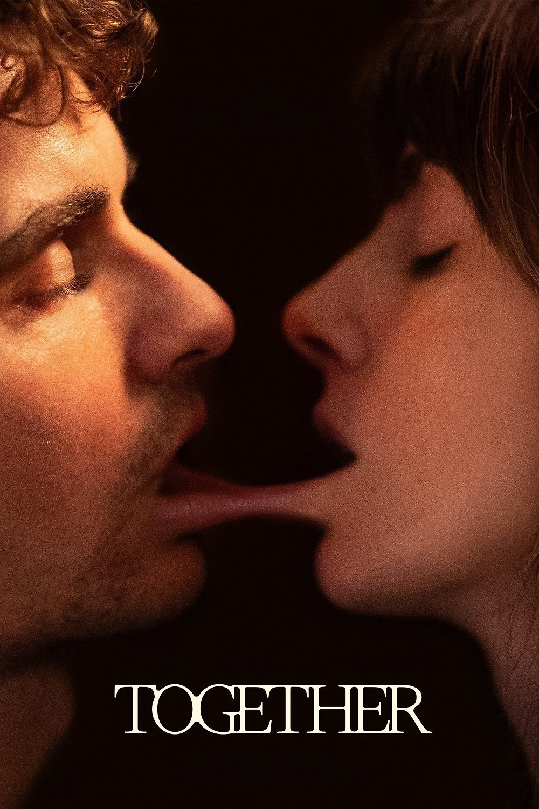
Together
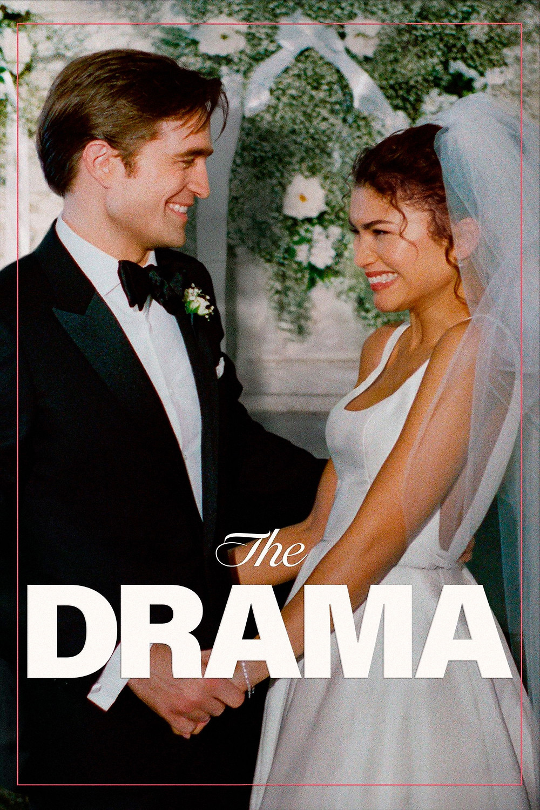
The drama